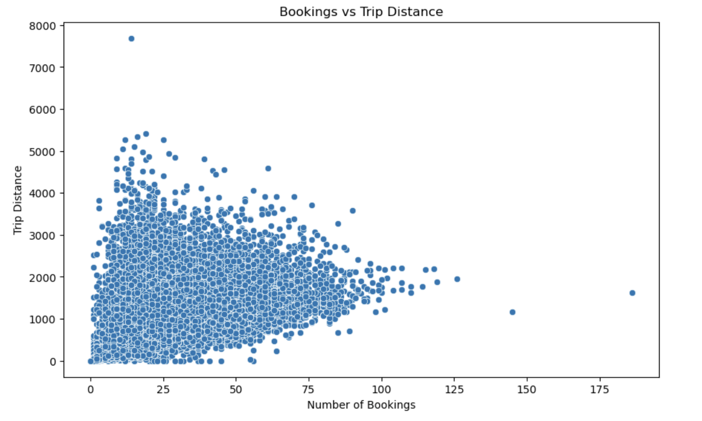

They need to know how many hours their rooms are booked and a histogram showing hours booked distribution, right skewed is depicted below. Some of the categories from which most bookings are likely to occur are shown below, starting with bookings that are 200 hours and below, with the bookings drastically reducing once they go above 500 hours. A few of those are more than 1000 equaling to 1%, while the majority are below 500, and most of the bookings are of short duration.
Histogram of trip distances depicts a density of trips in the range 500 to 2000 units and 1000 units being the mode. Distances longer than 2000 are less common, and very occasionally exceeding 4000. The distribution shows that the large majority of the activities falls in the range of short to medium distance travels.
Total bookings show that GoGet has taken almost 900000 bookings while other operators such as car Next door, Flexcar-Hertz, Popcar, Uber Carshare and others have small bookings compared to GoGet. This shows that GoGet occupies a relatively large portion of Mindalmost half of the market, and therefore occupies a dominant position.
The chart also depicts average hours that operator booked and the highest amount comes from Car Next Door and Uber Carshare of over 250 hours. Popcar also averages high while GoGet and Flexicar-Hertz have lower averages which imply that particular operators were making shorter bookings.
From the chart, the “Installed” status takes significantly most of the total hours booked, with over five million while statuses like “Active” and “Temporary Removal” scales about the chart’s bottom. This means most bookings are linked to “Installed” pointing to how vital it is in operations.
The first scatter plot represents bookings against the trip distance whereby most dots are located at less than 50 booking count and 3000 distance. Only a small number of such values fall outside these ranges. The evidence for the first hypothesis weakly positive correlation is also moderate as the trip distance does not necessarily lead to long bookings.
The cumulative hours booked line is perfectly straight and rises over the straight time line with values nearing 6 million. Minor fluctuations signify irregularity in terms of change in booking, nevertheless overall upward movement explains that the demand is gradually escalating and remains constant.